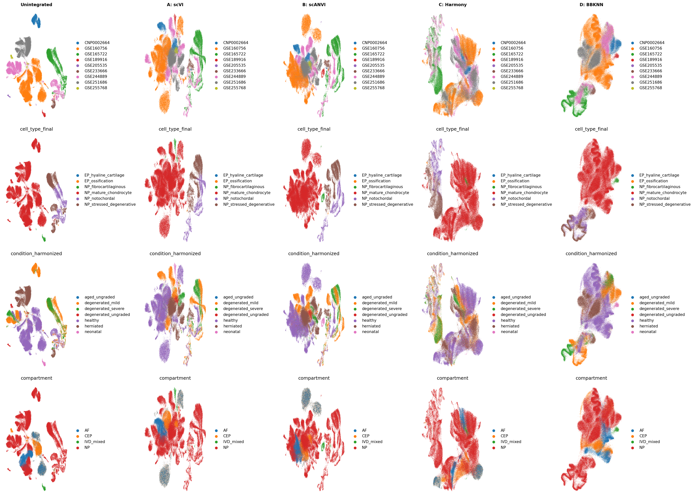
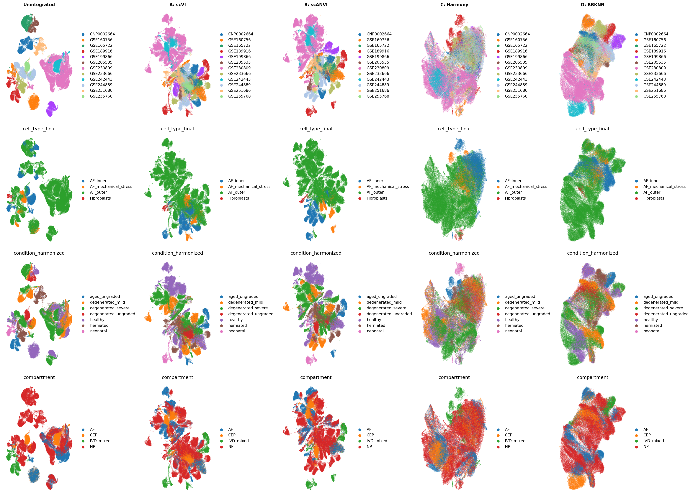
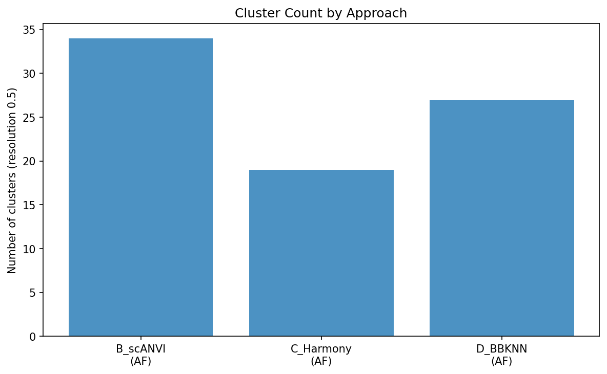

Module 05: Cross-Dataset Integration Report
Generated: 2026-03-05 19:28
Total cells integrated
436,239
Tier 1 (non-resident)
14,566
Tier 1: Non-Resident Cells
Tier 2: NP Resident Cells

Tier 2: AF Resident Cells

Integration Metrics
| Tier | Compartment | Approach |
iLISI | cLISI | Batch ASW | Cell Type ASW |
Isolated Label F1 | Overall Score |
Clusters (res 0.5) | Condition Accuracy |
| tier2 |
AF |
B_scANVI |
0.007 |
1.000 |
0.978 |
0.511 |
0.673 |
0.615 |
34 |
0.624 |
| tier2 |
AF |
C_Harmony |
0.051 |
0.993 |
0.975 |
0.484 |
0.630 |
0.601 |
19 |
0.581 |
| tier2 |
AF |
D_BBKNN |
0.000 |
1.000 |
0.957 |
0.494 |
0.693 |
0.611 |
27 |
0.867 |
Cluster Count Comparison

Validation
- PASS: Tier 1 non-resident output exists (/home/ubuntu/lotz-ivd/data/integrated/tier1_nonresident.h5ad)
- PASS: Tier 2 NP output exists (/home/ubuntu/lotz-ivd/data/integrated/tier2_resident_NP.h5ad)
- PASS: Tier 2 AF output exists (/home/ubuntu/lotz-ivd/data/integrated/tier2_resident_AF.h5ad)
- PASS: NP has A_scVI embedding (X_scvi)
- PASS: NP has B_scANVI embedding (X_scanvi)
- PASS: NP has C_Harmony embedding (X_harmony)
- PASS: NP has D_BBKNN embedding (X_umap_bbknn)
- PASS: AF has A_scVI embedding (X_scvi)
- PASS: AF has B_scANVI embedding (X_scanvi)
- PASS: AF has C_Harmony embedding (X_harmony)
- PASS: AF has D_BBKNN embedding (X_umap_bbknn)
- PASS: NP A_scVI blob check: 24 clusters at res 0.5
- PASS: NP B_scANVI blob check: 27 clusters at res 0.5
- PASS: NP C_Harmony blob check: 17 clusters at res 0.5
- PASS: NP A_scVI study-cluster ARI = 0.229 (< 1.0)
- PASS: NP B_scANVI study-cluster ARI = 0.238 (< 1.0)
- PASS: NP C_Harmony study-cluster ARI = 0.184 (< 1.0)
- PASS: AF A_scVI blob check: 34 clusters at res 0.5
- PASS: AF B_scANVI blob check: 34 clusters at res 0.5
- PASS: AF C_Harmony blob check: 19 clusters at res 0.5
- PASS: AF A_scVI study-cluster ARI = 0.202 (< 1.0)
- PASS: AF B_scANVI study-cluster ARI = 0.218 (< 1.0)
- PASS: AF C_Harmony study-cluster ARI = 0.113 (< 1.0)
- PASS: Metrics file exists with 3 rows
- FAIL: Integration report missing
Human Checkpoint Questions
- Which integration approach (A-D) best preserves cell state variation while adequately removing batch effects?
- Is any approach clearly superior, or is a combination needed (e.g., scANVI for NP, Harmony for AF)?
- Does the "blob" problem recur with any approach? If so, is Approach E or F the appropriate fallback?
- Should the analysis proceed with integrated data, per-dataset data, or both in parallel?
- Are there any study-specific effects that persist after integration?
- Does the integration reveal any new cell states not visible in per-dataset analysis?